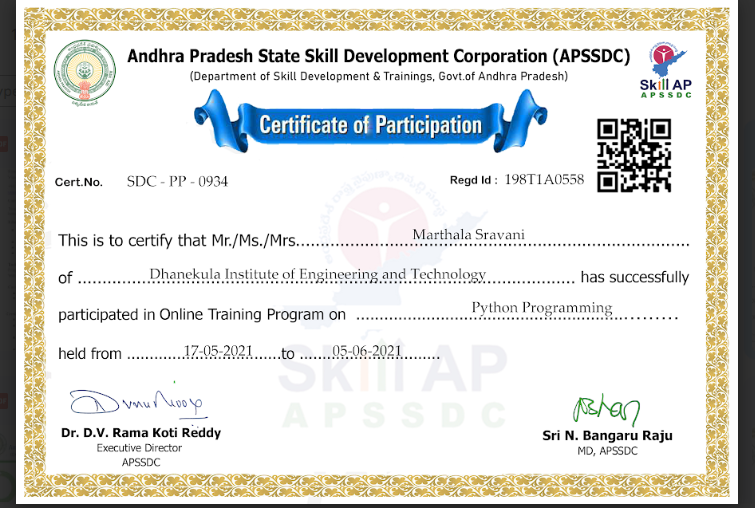
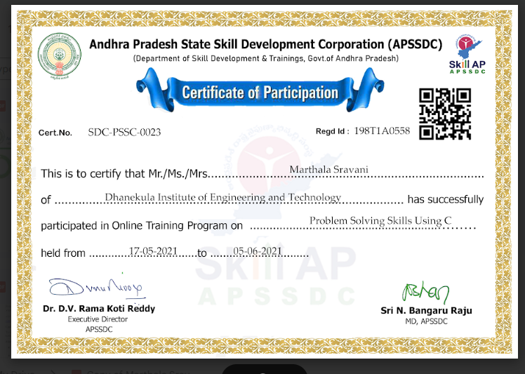
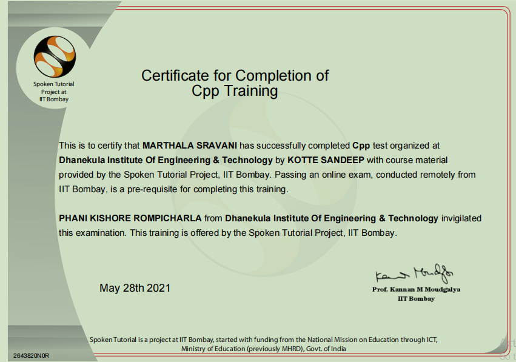
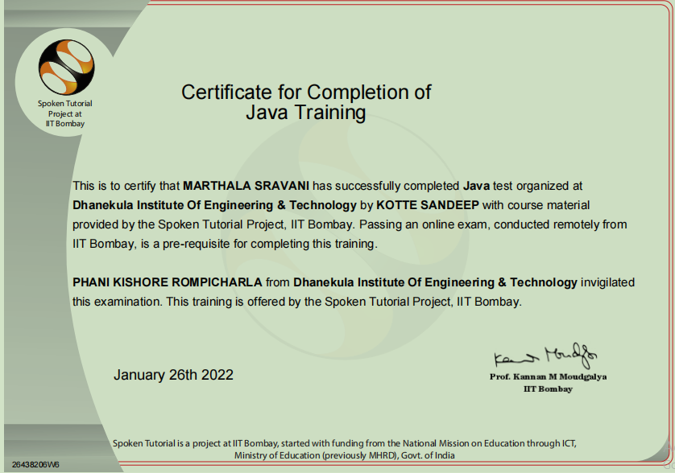
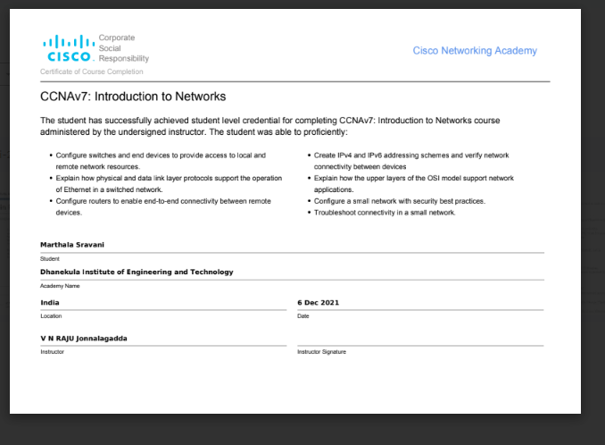
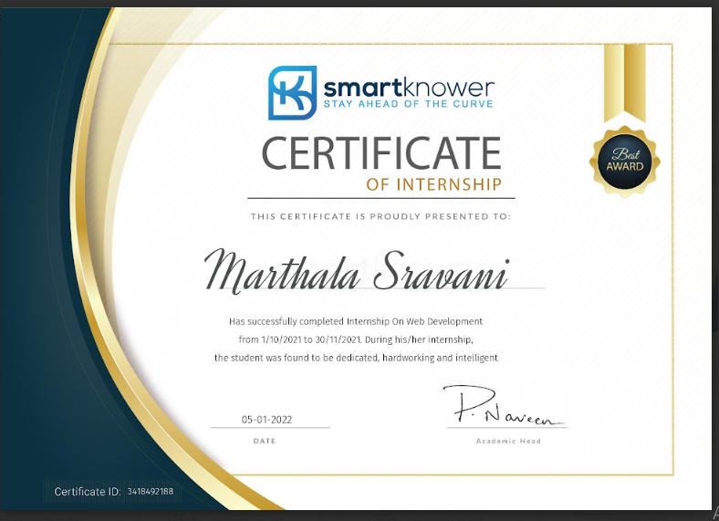
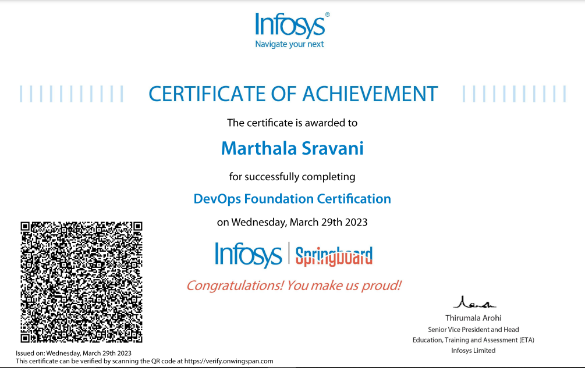

CERTIFICATIONS
- I have completed a Certification on Python Programming through APSSDC.

- I have completed a Certification on C Programming through APSSDC.

- I have completed a Certification on C Programming by spoken tutorial

- I have completed a Certification on C++ Programming by spoken tutorial

- I have completed a Certification on Java Programming by spoken tutorial

- I have Completed a certifaction on Design Thinking for Innovation by Coursera

- I have Completed a certification on Programming Essentials in Python by Cisco Networking Academy in collaboration with Open EDG Python Institute.

- I have Completed a certification on CCNA by Cisco Networking Academy.

- I have completed a project on creating a clock using HTML, CSS, JavaScript which includes displaying Time, Date, Day along with countdown Timer.

- I have completed a certification on DevOps by Infosys Springnpard.
